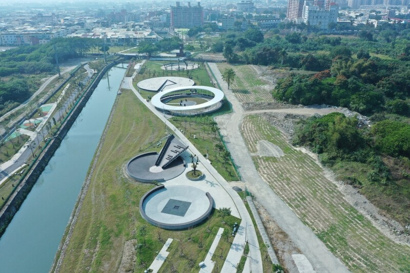
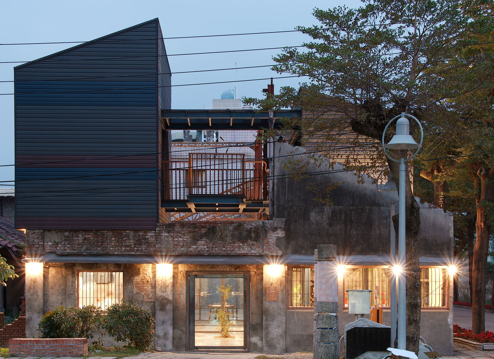
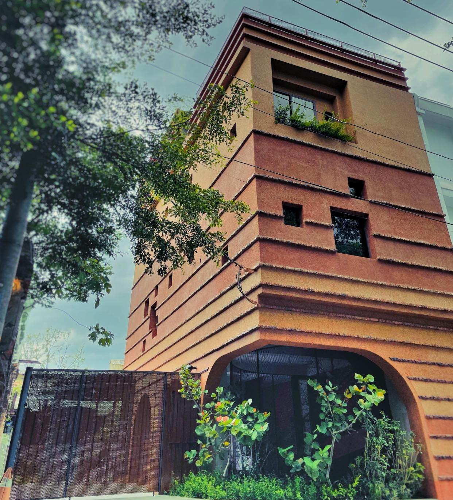
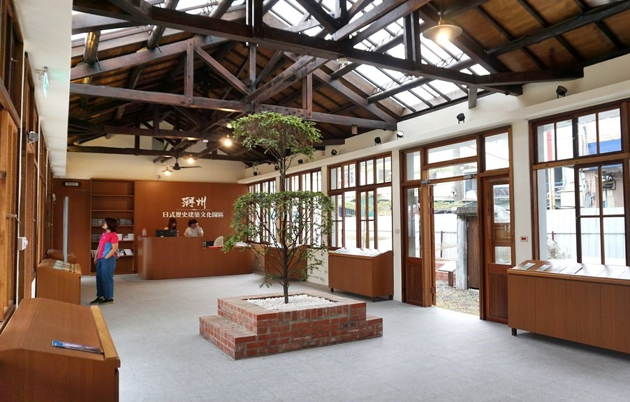

DAY 1
【屏東縣民公園】
原是台糖舊紙漿的工業遺址，後來經縣府打造，為提供更舒適且有趣的休憩空間給縣民使用
耗時長達5年多，將荒廢27年的台糖舊紙漿廠遺構活化再生，融入全新的殺蛇溪水岸藍帶與綠帶
打造台灣第一處以工業遺構為核心，複合水岸廊道的園區， 園區總占地20公頃的地景
複合歷史、人文、生態、景觀、水岸等特質
耗時長達5年多，將荒廢27年的台糖舊紙漿廠遺構活化再生，融入全新的殺蛇溪水岸藍帶與綠帶
打造台灣第一處以工業遺構為核心，複合水岸廊道的園區， 園區總占地20公頃的地景
複合歷史、人文、生態、景觀、水岸等特質
【驛前大和頓悟所】
位於屏東竹田火車站正對面步行50公尺處
由傳統碾米廠改造的咖啡館，融和了老房子與屏東在地的文化氣息
這間咖啡廳的設計理念就是希望可以把屏東的氛圍帶進去
因此可以在這裡看到很多不同的植栽、陽光、空氣的流動
讓每一個來到這裡的人，可以感受到屏東的緩慢，還有舒適跟溫暖
將屏東所有的元素都集結到咖啡廳裡
由傳統碾米廠改造的咖啡館，融和了老房子與屏東在地的文化氣息
這間咖啡廳的設計理念就是希望可以把屏東的氛圍帶進去
因此可以在這裡看到很多不同的植栽、陽光、空氣的流動
讓每一個來到這裡的人，可以感受到屏東的緩慢，還有舒適跟溫暖
將屏東所有的元素都集結到咖啡廳裡
- 電話：08-771-2822
- 地址：屏東縣竹田鄉豐明路26號
- 官網：大和頓物所
- 營業時間：週一~週日 9:00~18:00
- 低銷為每人乙杯飲品
【潮州日式歷史建築文化園區】
在日治時期先後做為台南縣潮州辨務署及總督府行政機關使用，曾是「林少貓抗日事件」主戰場之一
後做為公路工程機關之辦公室與眷舍所在，是潮州重要的歷史記憶
在園區內提供免費的浴衣體驗，每人限時10分鐘
還有鯉魚旗、櫻花樹，園區瀰漫和風風情，讓此成為屏東熱門景點
後做為公路工程機關之辦公室與眷舍所在，是潮州重要的歷史記憶
在園區內提供免費的浴衣體驗，每人限時10分鐘
還有鯉魚旗、櫻花樹，園區瀰漫和風風情，讓此成為屏東熱門景點
- 電話：08-789-4515
- 地址：屏東縣潮州鎮延平路30號
- 官網：潮州日式歷史建築文化園區
- 營業時間：週二~週日 9:00~17:00
- 門票：免門票，有付費停車場
【德旅店】
竹田第一家合法民宿，與大和頓物所只有一牆之隔，同樣為碾米廠改造，設計的風格類似
在一樓設有誠實冰箱，自己看上面的牌價投錢，提供廚房、鍋具可以做使用，食材可以代購或是自行準備
結合在地美食，每個房型贈送明信片、餐飲兌換券、折價券，有豆油伯茶葉蛋、頓物放心田霜淇淋
老闆希望能夠將人帶進這個地方，讓大家知道竹田這個鄉下地方
在一樓設有誠實冰箱，自己看上面的牌價投錢，提供廚房、鍋具可以做使用，食材可以代購或是自行準備
結合在地美食，每個房型贈送明信片、餐飲兌換券、折價券，有豆油伯茶葉蛋、頓物放心田霜淇淋
老闆希望能夠將人帶進這個地方，讓大家知道竹田這個鄉下地方
- 電話：0975502083
- 地址：屏東縣竹田鄉豐明路22號
- 官網：德旅店
屏東縣民公園

驛前大和頓物所

德旅店

潮州日式歷史建築文化園區
